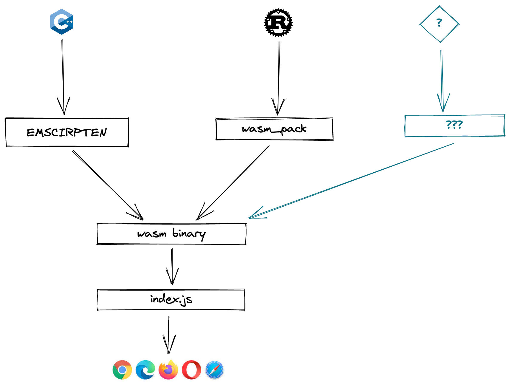
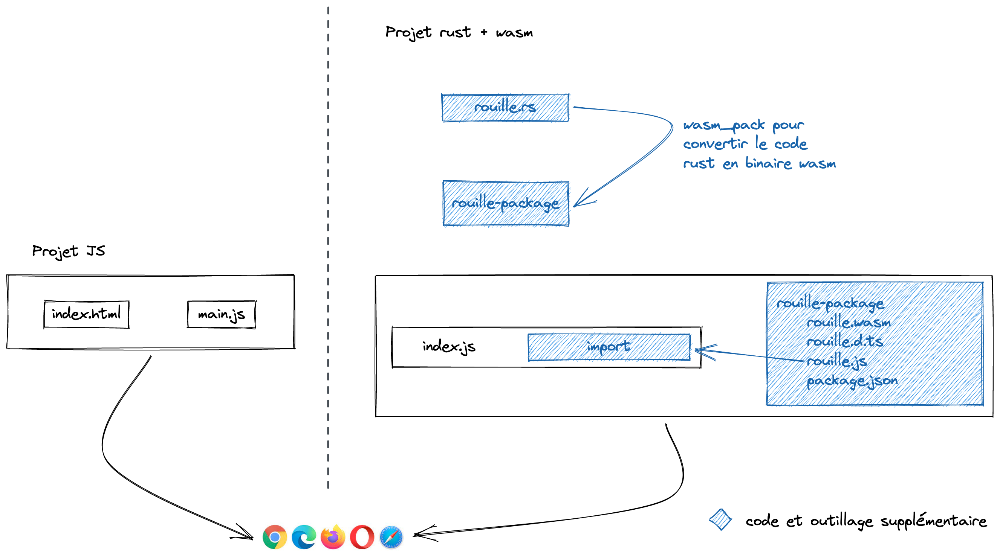
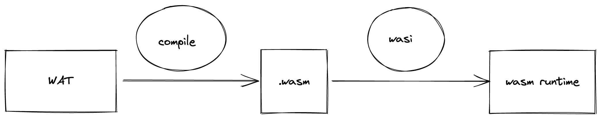
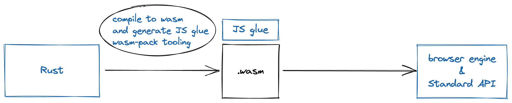
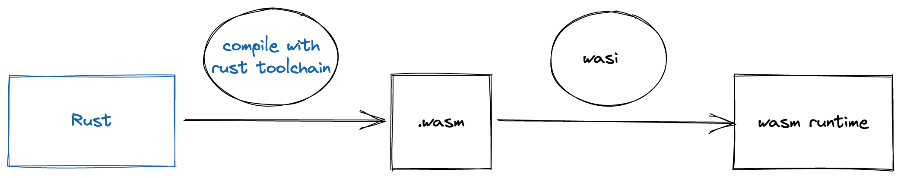

Introduction
L'objectif de ces notes est de présenter rapidement Web Assembly (Wasm) sans trop descendre dans les mécanismes internes de la spec et des outils.
À l'issue de cette lecture, j'espère que vous repartirez avec une compréhension générale de ce qu'est Wasm. De ce que cela peut apporter au développement web, mais pas seulement. De ce à quoi cela peut servir et les limitations que ça lève. Ainsi que des points d'améliorations qu'il reste à traiter avant que Wasm puisse devenir une norme répandue et utilisée.
À titre personnel, je pense que Wasm est destiné à prendre de plus en plus de place dans le développement de logiciel. Cela transpire certainement dans ces notes, l'idée dernière n'est pourtant pas de convaincre ou de rallier à la cause Wasm. Pour cela il faudrait s'appuyer sur des études, articles ou publications beaucoup plus factuels. Mais simplement d'inviter à la reflexion sur ce que peut apporter Wasm dans l'IT.
Web Assembly
Web Assembly c'est ni du web ni de l'assembly. Alors qu'est-ce que c'est ?
Vous avez 5 minutes ?
Alors c'est parti pour une explication rapide et imprécise de ce qu'est Web assembly...
Il était une fois Wasm
1989 : WWW
Tim Berner Lee invente le world wide web
1995 : javascript
Javascript a été créé en 10 jours par Brendan Eich. Le langage n'était pas sans défaut, surtout côté perf, mais pour le rendu de formulaire HTML ça fonctionnait plutôt bien.
2008 : chrome, moteur v8
Avec des sites web qui nécessitaient toujours plus de fonctionnalités d'affichage, les perfs en JS devenaient un sujet. Google avec son browser chrome et le moteur v8, qui permet de faire de la compilation JIT de JS, apporte des niveaux de performances assez incroyables et ouvre la voie à ce que va devenir JS et l'écosystème web que l'on connaît aujourd'hui.
2015 : Wasm
Web Assembly permet d'exécuter du code écrit dans d'autres langages que JS, dans le browser comme s'il s'agissait de modules natifs. Dit autrement, cela permet d'écrire du code en c, c++, rust, etc. qui va être exécuté par le browser et d'avoir le même niveau de performance que s'il était exécuté nativement sur une machine.
Comment ça fonctionne ?

De manière très simplifiée, les étapes pour avoir du code de n'importe quel langage, qui soit exécuté par le browser de façon native, peut se décomposer en 4 étapes :
- Récupérer/écrire du code (c, c++, rust)
- Transcrire le code (c, c++, rust) en un binaire Wasm. De nombreux outils sont déjà disponibles (emscriptem, wasm_pack)
- Importer le .wasm dans un fichier JS
- Utiliser le code (c, c++, rust) dans le navigateur
Quelques précisions sur l'import en JS
Pour importer un module Wasm dans un fichier JS. La lib standard JS expose le module WebAssembly qui permet de charger le module Wasm sans trop de code
WebAssembly.compileStreaming(fetch('simple.wasm'))
.then(function (mod) {
var imports = WebAssembly.Module.imports(mod);
console.log(imports[0]);
});
Ou en utilisant npm
Avec le lien dans le package.json
{
"dependencies": {
"wasm-module": "file:path/to/module"
}
}
Et l'import dans le JS
import * as wasm from "wasm-module";
wasm.greet();
Ça complexifie le dev web, pourquoi on devrait s'embêter ?
JS vs Wasm
Comparaison d'un projet JS simple avec un projet qui utilise un module Wasm 
Il est assez flagrant que de développer un module Wasm en rust ajoute beaucoup d'étapes et de code sur un projet. Pour s'en convaincre, il suffit de suivre le tuto rust to Wasm et de regarder le nombre de fichiers nécessaires à un simple "hello world"
Voici à quoi ressemble l'arborescence
hello-wasm/
├── Cargo.lock
├── Cargo.toml
├── index.html
├── pkg
│ ├── hello_wasm.d.ts
│ ├── hello_wasm.js
│ ├── hello_wasm_bg.wasm
│ ├── hello_wasm_bg.wasm.d.ts
│ └── package.json
└── src
└── lib.rs
Pourquoi ?
Bon c'est sûr que si on compare un projet JS avec webpack à un projet rust + Wasm, l'overhead du projet rust + Wasm paraît plus raisonnable. Mais quand même, pourquoi on s'emmerderait à faire du Wasm alors que ça complexifie le process de dev.
Qu'est qui justifie d'accepter cette complexité ?
Réponse
La vitesse ! Mettez vos lunettes, ça va vite, très très vite
En gros, Wasm est la réponse quand on a besoin d'avoir un code avec de la computation lourde optimisé aux petits oignons et que JS ne permet pas d'atteindre le niveau d'optimisation/performance désiré.
L'autre énorme avantage de Wasm est que l'on peut porter un logiciel codé en c++ par exemple directement dans le navigateur, sans avoir à réécrire tout le logiciel en JS.
Un exemple concret ? Autocad
Vers l'infini et au-delà 🚀 🌌
Wasm permet d'apporter des performances et des optimisations qui ne pouvaient être atteintes jusque-là. Et d'un point de vue portabilité tout ce dont on a besoin, c'est d'un browser. Alors ça veut dire que l'on peut lancer des programmes sur n'importe quel machine, même sur des serveurs ?
Eh bien oui, mais à condition qu'il y ait un browser d'installer. Et sur une machine qui n'a pas beaucoup de capacité de calcul et de mémoire, ce n'est pas si trivial.
Et si on se passait du browser...
S'abstraire du browser
Comment on enlève le browser ?
 Mouais un émulateur, pas "fou fou" comme solution. Heureusement des gens intelligents se sont dit la même chose et c'est
comme cela qu'est né Web Assembly System Interface (abrégé par WASI)
Mouais un émulateur, pas "fou fou" comme solution. Heureusement des gens intelligents se sont dit la même chose et c'est
comme cela qu'est né Web Assembly System Interface (abrégé par WASI)
WASI règle 2 problèmes :
- la portabilité (plus besoin de browser)
- la sécurité (avec une interface qui ne donne accès qu'à certaines fonctionnalités du kernel)

compute@edge 🌐 💻 compute everywhere
Grâce à Wasm et WASI on peut écrire des programmes dans des langages performants et optimisés, et les faire tourner sur des browsers, des serveurs, des multitudes de devices. Tout ça de manière sécurisée et avec une bonne isolation pour gérer l'accès aux fonctions du kernel et au filesystem.
Les 4 piliers du Web Assembly
- fast (plus rapide que docker, boot en nanosecondes)
- small (plus léger que docker)
- portable
- secure (meilleure isolation que docker qui partage le même host) et grâce à cela on peut imaginer déployer des programmes partout (client web, server, @edge)
Les conteneurs sont morts vive les conteneurs WASI !
exemple d'Amazon avec prime video
Amazon a utilisé Wasm pour cibler plus de 8000 types de devices différents et améliorer les perfs de prime video au passage.
The total memory consumption for the Wasm VM, including the module instance, environment, and the module itself is at most 7.5 megabytes. By moving these systems to Wasm, we have saved a total of 30 megabytes of JavaScript heap memory. Memory is a scarce resource on most of the devices we deploy on, so this is a welcome reduction.
The binary size of our Wasm module is 150 kilobytes when compressed (750 kilobytes uncompressed, after symbol stripping). The module’s small size, coupled with the fast VM start time, means that the addition of Wasm doesn’t affect the app start-up time.
Pour plus de détails voici l'article
Wasm : c'est le turfu ou encore un truc de hipster ?
Le(s) point(s) faible(s) de Wasm
Wasm ne supporte que 4 types de donnée
- les entiers 32 bit
- les entiers 64 bit
- les flottants 32 bit
- les flottants 64 bit
Donc pour bosser sur des chaînes de caractères en UTF-8 par exemple, on est obligé de passer par de l'encodage avec des entiers et des vecteurs. Mais rassurons-nous des gens très bien ont commencé à travailler là-dessus pour nous proposer des runtimes (wasmitme, wasmer) qui embarque de plus en plus de fonctionnalités.
L'outillage ? Pas encore assez mature
Les bindings. Il faut parfois réécrire du code bas niveau pour utiliser des librairies existantes
Wasm 101
WASM, WAT, WASI, ... ???
 L'illustration ci-dessus montre les étapes qui permettent de passer du code au binaire à execution par une runtime.
WebAssembly
Quand on parle de Wasm, cela peut faire référence à la spec du format d'instruction binaire, à la VM, ou encore aux fichiers binaires (.wasm) qui vont être exécutés par le moteur. Par la suite, nous allons nous intéressé surtout aux fichiers .wasm et aux manières de produire ce binaire.
WebAssembly text format
WebAssembly Text Format abrégé par WAT, est une representation textuelle du binaire Wasm compréhensible et éditable par des humains. WAT est basé sur les S-expressions.
WebAssembly system interface
WebAssembly System Interface abrégé par WASI, est une interface (comme son nom l'indique) qui permet de "communiquer" avec un OS conceptuel (à différencier d'un OS spécifique). WASI a pour but de proposer d'utiliser des binaires wasm pour interagir avec n'importe quel OS de façon standardisée.
WebAssembly runtime
Pour pouvoir exécuter un binaire wasm sur une machine (device, server, ...) il manque une dernière brique. Un runtime qui permet de lancer les instructions contenues dans le binaire et interagir avec les différents process de la machine cible. Il existe plusieurs wasm runtimes : wasmtime, wasmer, etc.
enough babbling! time to show the code.
Compiler un langage haut niveau vers un binaire wasm
Pour la suite de cette démonstration, je vais utiliser Rust comme langage haut niveau. De nombreux langages possèdent déjà les outils pour permettre d'obtenir un binaire wasm (c/c++, javascript, Typescript, ...) pour les autres il s'agit certainement d'une question de temps.
Pourquoi Rust ?
Je vous dirais bien que Rust possède des killer features comme le borrow-checker, une gestion mémoire au poil, du pattern matching et des macros hygiéniques. Rust a tout ça, mais si j'ai choisi Rust, c'est parce que je ne suis pas un bon développeur et que je ne sais pas écrire du c/c++ sans tomber sur une dangling pointer exception ou un crash sur un programme multi-thread que je suis incapable de debugger. Sans compter que les outils Rust+Wasm existent déjà et qu'ils fonctionnent bien.
Salut Wasm, depuis Rust
🛠️ Prérequis 🛠️
- Avoir installé rustup, rustc, cargo. Si ce n'est pas déjà fait suivre les instructions ici.
- Avoir ajouté la target wasm32-unknown-unknown aves rustup, si ce n'est pas déjà fait, lancer la
commande
rustup target add wasm32-unknown-unknowndans un terminal
🚧 Commencer le projet 🚧
Lancer la commande cargo new --lib simple-example-without-tools. Cela créer le projet
Dans le fichier scr/lib.rs ajouter le code suivant :
#![allow(unused)] fn main() { #[no_mangle] fn answer() -> u32 { 42 } }
Ajouter la configuration suivante dans le fichier Cargo.toml :
[lib]
crate-type = ["cdylib"]
Puis construire l'artéfact wasm avec la commande suivante :
cargo build --target wasm32-unknown-unknown --release
Cela produit le binaire wasm dans le dossier target
.
├── Cargo.lock
├── Cargo.toml
├── index.html
├── README.md
├── src
│ └── lib.rs
└── target
├── CACHEDIR.TAG
├── release
│ ├── build
│ ├── deps
│ ├── examples
│ └── incremental
└── wasm32-unknown-unknown
├── CACHEDIR.TAG
└── release
├── build
├── deps
│ ├── simple_example_without_tools.d
│ └── simple_example_without_tools.wasm
├── examples
├── incremental
├── simple_example_without_tools.d
└── simple_example_without_tools.wasm <-- voici le binaire Wasm
Dans un fichier HTML à la racine du projet, importer le binaire wasm avec une balise script
<!DOCTYPE html>
<html lang="en">
<head>
<meta charset="UTF-8">
<title>Title - simple rust wasm</title>
</head>
<body>
<script>
WebAssembly.instantiateStreaming(fetch('target/wasm32-unknown-unknown/release/simple_example_without_tools.wasm'))
.then(obj => {
console.log('The answer is: ', obj.instance.exports.answer());
});
</script>
</body>
</html>
Dans le navigateur, en ouvrant le fichier HTML. La console du navigateur affiche bien la réponse.
The answer is: 42
🙌 It's alive!!! 🙌
Pour résumer, voici les 2 étapes pour exécuter un binaire wasm dans le navigateur :
- compiler du code avec pour cible Wasm, il faut que les outils de compilation du langage supportent le standard wasm pour pouvoir exposer les fonctions avec les types de données gérés par Wasm.
- importer le code dans le navigateur, il faut que le navigateur intègre l'API WebAssembly qui permet d'interagir avec le binaire Wasm
L'exemple de code ne montre pas les limitations de Wasm (Seulement 4 types de données int32, int64, float32, float64) pour les voir il faut jouer avec des types de données plus complexes. Par exemple les chaînes de caractères.
Dans ce cas, il faut avoir un code rust qui ressemble à ça :
#![allow(unused)] fn main() { use std::ffi::CString; use std::os::raw::c_char; #[no_mangle] fn hi_mate() -> *const c_char { let c_to_print = CString::new("Ho hi, mate!").expect("CString::new failed"); c_to_print.into_raw() } #[no_mangle] fn hi_mate_len() -> usize { "Ho hi, mate!".len() } }
Et un script dans le fichier HTML beaucoup plus verbeux :
<script>
WebAssembly.instantiateStreaming(fetch('target/wasm32-unknown-unknown/release/simple_example_without_tools.wasm'))
.then(obj => {
const linearMemory = obj.instance.exports.memory;
const offset = obj.instance.exports.hi_mate();
const len = obj.instance.exports.hi_mate_len();
const stringBuffer = new Uint8Array(linearMemory.buffer, offset, len);
let str = '';
for (let i = 0; i < stringBuffer.length; i++) {
str += String.fromCharCode(stringBuffer[i]);
}
console.log(str);
});
</script>
Cela montre qu'il est tout à fait possible de passer outre les "limitations" dues aux 4 types de données utilisables dans le standard Wasm, mais que cela a un coût. Celui d'écrire de la glue assez bas niveau ne serait-ce que pour manipuler des chaînes de caractères.
Mais pas de panique, il existe déjà des outils qui permettent d'écrire du code haut niveau sans se préoccuper des bindings entre Rust, Wasm et le moteur Javascript du navigateur. Ce sera l'exemple du prochain chapitre.
Utiliser les outils pour interagir avec le moteur Javascript
L'interfaçage entre le code Rust et les fonctionnalités du navigateur peuvent-être pénibles à mettre en place si le projet ne se base pas sur de l'outillage permettant de faire la glue entre Rust, Wasm et Javascript. C'est là que wasm-pack vient à la rescousse.
L'outillage
Grâce à l'outillage Rust+Wasm, il est possible de coder des projets en Rust et de les utiliser dans un projet web en passant par Wasm. Voici quelques outils à connaître.
wasm-pack
wasm-pack se définit comme un Wasm workflow tool. Il peut être installé très facilement en ligne de commande. Il faut au préalable avoir installé Rust. wasm-pack est très pratique pour créer, construire, tester et publier des modules wasm à partir de code Rust. Et les intégrer à l'écosystème Javascript et dans le navigateur. Cela permet notamment de créer des modules Wasm et de les importer comme s'il s'agissait de paquets JS directement dans des projets web sans se préoccuper de l'API WebAssembly.
wasm-bindgen
wasm-bindgen est un utilitaire qui permet de s'interfacer avec l'API JS du navigateur. L'avantage d'utiliser wasm-bindgen est que de nombreuses fonctionnalités natives du navigateur sont déjà implémentées et prêtes à l'emploi dans le code Rust. Cela évite d'avoir à écrire des bindings bas niveau pour accéder au DOM par exemple.
Un projet Rust avec wasm-pack et wasm-bindgen
Reprenons l'exemple de notre projet précédent, un simple greeting, qui prendrait en input un nom. Mais cette fois-ci, il
sera intéressant d'utiliser des fonctionnalités du navigateur comme alert et prompt.
Voici le code Rust :
#![allow(unused)] fn main() { use wasm_bindgen::prelude::*; #[wasm_bindgen] extern "C" { fn alert(s: &str); fn prompt(s: &str) -> String; } #[wasm_bindgen] pub fn hi_mate() { let name = prompt("What's ye name?"); alert(&format!("Ho hi, {}!", name)); } }
Et les dépendances dans Cargo.toml :
[dependencies]
wasm-bindgen = "0.2.79"
[lib]
crate-type = ["cdylib"]
La macro #[wasm_bindgen] positionnée au-dessus de extern "C"sert à importer des fonctions JS dans le code Rust. Ce
qu'il faut comprendre c'est que l'on n'importe pas réellement les fonctions. Mais que des bindings ont été codé en Rust
pour pouvoir interagir avec l'API JS du navigateur. Et que lorsque le module wasm sera exécuté par le navigateur il fera
bien appel à la fonction window.alert().
Pour voir à quoi ressemble ces bindings il faut aller voir l'API de la lib web-sys (qui est une dependence de wasm-bindgen)
Extrait du code source de web-sys :
#![allow(unused)] fn main() { #[wasm_bindgen(catch, method, structural, js_class = "Window", js_name = alert)] #[doc = "The `alert()` method."] #[doc = ""] #[doc = "[MDN Documentation](https://developer.mozilla.org/en-US/docs/Web/API/Window/alert)"] #[doc = ""] #[doc = "*This API requires the following crate features to be activated: `Window`*"] pub fn alert(this: &Window) -> Result<(), JsValue>; }
La macro #[wasm_bindgen] placée au-dessus de pub fn hi_mate() sert à exporter la fonction Rust pour qu'elle puisse
être utilisée par le navigateur. D'ailleurs, c'est ce que nous allons voir maintenant. Pour utiliser la
fonction hi_mate il faut importer le module wasm dans un script JS.
wasm-pack permet de build un module wasm de différentes manières, celle utilisée ici est la target web.
wasm-pack build --target web
Cela produit un dossier pkg avec les fichiers suivants :
pkg
├── package.json
├── simple_example_with_wasm_pack.d.ts
├── simple_example_with_wasm_pack.js
├── simple_example_with_wasm_pack_bg.wasm
└── simple_example_with_wasm_pack_bg.wasm.d.ts
Ce qui est intéressant, c'est le fichier .js, on peut voir que la fonction init est exportée et que toute la glue qui
permet de charger le binaire wasm avec l'API WebAssembly est déjà généré de façon optimisée.
export function hi_mate() {
wasm.hi_mate();
}
async function load(module, imports) {
if (typeof Response === 'function' && module instanceof Response) {
if (typeof WebAssembly.instantiateStreaming === 'function') {
try {
return await WebAssembly.instantiateStreaming(module, imports);
} catch (e) {
// ...
}
}
const bytes = await module.arrayBuffer();
return await WebAssembly.instantiate(bytes, imports);
// ...
}
}
async function init(input) {
if (typeof input === 'undefined') {
input = new URL('simple_example_with_wasm_pack_bg.wasm', import.meta.url);
}
// ...
if (typeof input === 'string' || (typeof Request === 'function' && input instanceof Request) || (typeof URL === 'function' && input instanceof URL)) {
input = fetch(input);
}
const {instance, module} = await load(await input, imports);
wasm = instance.exports;
init.__wbindgen_wasm_module = module;
return wasm;
}
export default init;
Ce qui permet d'importer la function hi_mate dans notre script JS comme s'il s'agissait d'une fonction exportée depuis
un module NPM. La preuve par le code :
<script type="module">
import init, {hi_mate} from "./pkg/simple_example_with_wasm_pack.js";
init().then(() => {
hi_mate()
});
</script>
Et lorsqu'un serveur est lancé pour servir le fichier HTML et que l'on ouvre le navigateur. Il y a bien une fenêtre
prompt qui demande d'insérer un nom puis une fenêtre alert qui affiche un greeting avec le nom.
Wasm sans le navigateur
Après avoir vu comment écrire et utiliser des modules wasm dans le navigateur, avec et sans outillage, il est temps de voir toutes les potentialités de wasm. Parce que wasm est une stack-based virtual machine et peut donc s'interfacer avec n'importe quel matériel et n'importe quel OS pour peu que ce dernier embarque un wasm runtime.
Wasm runtime
Après avoir compilé un module wasm vers un binaire wasm, il faut que la machine hôte puisse exécuter ce binaire et donc comprendre les instructions qui lui sont passées. Un des points fort de Wasm est la portabilité. Cela signifie que l'exécution d'un binaire wasm aura un résultat prédictible peu importe l'OS sur lequel il est exécuté.
Mais pour arriver à ce résultat, il faut bien un outil (runtime) qui est capable de comprendre les instructions contenues dans le binaire et de faire le lien avec les fonctions natives de l'OS. Par exemple, lire un stream, charger un buffer en mémoire, donner accès au filesystem. La liste est longue.
Voici une liste non exhaustive des runtimes pour WebAssembly qui existent :
- wasmer
- wasmtime
- lucet
- WAMR - WebAssembly Micro Runtime
Pour l'exemple de code, nous allons utiliser wasmer.
WASI
Avant d'installer wasmer et d'exécuter notre module wasm, quelques précisions sur WASI.
Dans le précédent paragraphe, il était question du runtime et de sa capacité à faire le lien entre le binaire wasm et les fonctions natives de l'OS. Pour que cela fonctionne sur la multitude d'OS et de hardware qui existe aujourd'hui, il faut un system interface, c'est-à-dire une API, qui expose la façon dont l'OS accède, par exemple, à la hiérarchie du filesystem.
WASI est une initiative pour standardiser la façon dont les runtimes s'interfacent avec les OS, pour garantir une portabilité générique et assurer de la stabilité pour les outils qui s'appuient sur les runtimes wasm.
Exemple avec du code
Enfin ! Nous allons pouvoir lancer un programme écrit en rust, compilé en binaire wasm et exécuter par wasmer(wasm runtime) sur une machine sans passer par le navigateur.
🛠️ Prérequis 🛠️
- Avoir installé wasmer
- Avoir ajouté la target wasm32-wasi aves rustup, si ce n'est pas déjà fait, lancer la
commande
rustup target add wasm32-wasidans un terminal
🚧 Coder le projet 🚧
Lancer la commande cargo new simple-example-with-wasmer. Cela créer le projet, cette fois, il ne s'agit pas d'une lib
rust mais d'un exécutable. Le point d'entré est le fichier main et la fonction main va être exportée par défaut dans
la target wasm.
Dans le fichier scr/main.rs ajouter le code suivant :
fn main() { println!("What's ye name?"); let mut buffer = String::from(""); let stdin = std::io::stdin(); stdin.read_line(&mut buffer); println!("Ho hi, {}!", buffer.trim()); }
My, my! C'est du code Rust, pas de macro pour interagir avec le runtime wasm. On se sent comme à la maison, en charentaises et en peignoir au coin du feu.
Pas de spécificité dans le Cargo.toml non plus :
[package]
name = "simple-example-with-wasmer"
version = "0.1.0"
edition = "2021"
[dependencies]
Il ne reste plus qu'à compiler le code rust vers la cible wasm-wasi :
cargo build --target wasm32-wasi --release
On retrouve le binaire produit dans le dossier target
.
├── Cargo.lock
├── Cargo.toml
├── README.md
├── src
│ └── main.rs
└── target
├── CACHEDIR.TAG
├── release
│ ├── build
│ ├── deps
│ ├── examples
│ └── incremental
└── wasm32-wasi
├── CACHEDIR.TAG
└── release
├── build
├── deps
│ ├── simple_example_with_wasmer-11e993127ad92e3a.d
│ └── simple_example_with_wasmer-11e993127ad92e3a.wasm
├── examples
├── incremental
├── simple-example-with-wasmer.d
└── simple-example-with-wasmer.wasm <-- le binaire wasm est ici !
🙌 Show time 🙌
Lorsque la commande wasmer run target/wasm32-wasi/release/simple-example-with-wasmer.wasm le runtime wasm exécute le
programme. Et c'est fait 🎉. On a notre premier programme compilé en wasm qui peut s'exécuter sur n'importe quelle
machine qui embarque un runtime wasm.
Synthèse sur l'outillage
L'outillage autour de wasm
Revenons sur le schéma qui illustre les étapes de compilation
Dans le cas, de l'exemple de code Rust pour la partie browser cela donnerai quelque chose comme ceci 
Et pour l'exemple de code Rust sans le browser, voici le schéma 
Ce que cela met en lumière, c'est que le process reste globalement le même et que cela n'impacte pas le développeur, à condition que les outils existent déjà et fonctionnent bien. Dans le cas de Rust, la communauté a fait un boulot incroyable et cela rend le développement de module wasm en Rust plaisant. Il y a d'autres langages qui sont bien outillés comme c/c++ avec emscriptem.
Tout cela pour dire que c'est important d'avoir des notions, voire une compréhension totale de ce que sont les acronymes WAT, WASI, WASM. Mais les outils rendent possibles un certain niveau abstraction et permettent de developer rapidement des modules qui fonctionnent comme cela a été vu dans les exemples précédents. Pour retrouver, l'intégralité du code des exemples, il y a un repo public.
Pour la suite
Pour la suite, il serait intéressant de descendre encore dans les entrailles de wasm. Sans doute en commençant par explorer les spécifications du standard et coder en WAT pour mieux comprendre comment le binaire wasm est généré.
Ensuite, peut-être faire un tour du côté du standard WASI et tenté d'implémenter un runtime wasm pour mieux comprendre les bindings entre wasm et le kernel.
Articles
- https://hacks.mozilla.org/2019/03/standardizing-wasi-a-webassembly-system-interface/
- https://madewithwebassembly.com/showcase/autocad/
- https://developer.mozilla.org/en-US/docs/Web/JavaScript/Reference/Global_Objects/WebAssembly/Module/imports
- https://rustwasm.github.io/docs/book/game-of-life/hello-world.html
- https://developer.mozilla.org/en-US/docs/WebAssembly/Rust_to_wasm
- https://blog.container-solutions.com/webassembly-in-the-cloud
- https://www.amazon.science/blog/how-prime-video-updates-its-app-for-more-than-8-000-device-types
- https://alexene.dev/2020/08/17/webassembly-without-the-browser-part-1.html